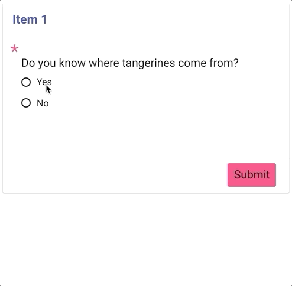
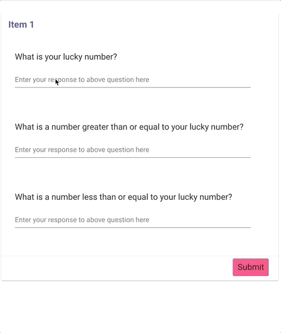
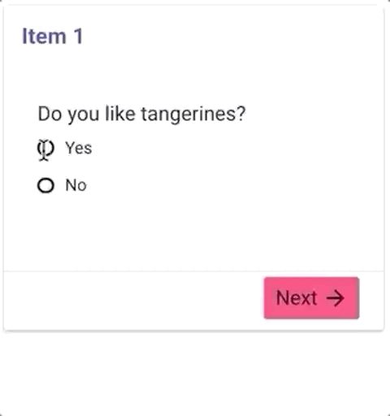

The Tangerine Form Editor’s Cookbook
Examples of various recipes for Tangerine Forms collected throughout the years. To create your own example, remix the example on glitch.com.
Skip a question based on input in another question
In the following example we ask an additional question about tangerines if the user indicates that they do like tangerines.
Run example - Open Editor - View Code

Skip sections based on input
In the following example, wether or not you answer yes or no to the question, you will end up on a different item.
Run example - Open Editor - View Code

Valid by number of decimal points
In the following example, we validate user input by number of decimal points.
Run example - Open Editor - View Code

Valid if greater or less than other input
Run example - Open Editor - View Code

Allowed date range based on today
Run example - Open Editor - View Code

Flag choice as discrepancy and/or warning and show or hide content depending
Run example - Open Editor - View Code

Indicate a mutually exclusive option in a checkboxes group such as “None of the above”
In the following example when you make a selection of a fruit and then choose one of the mutually exclusive options, your prior selections will be deselected.
Run example - Open Editor - View Code

Capture and show local date and time
Sometimes we want to show the user the local date and time to ensure their time settings are correct.
Run example - Open Editor - View Code

Show a timer in an item
Let’s say you want to show a timer of how long someone has been on a single item. This calculates the time since item open and displays number of seconds since then in a tangy-box.
Run example - Open Editor - View Code

Capture the time between two items
Sometimes we want to know how much time passed between two points in a form. This example captures, the start_time variable on the first item, then end_time on the last item. Lastly it calculates the length of time.
Run example - Open Editor - View Code

Hard checks vs. soft checks
A “hard check” using “valid if” will not allow you to proceed. However a “soft check” using “warn if” will allow you to proceed after confirming.
Run example - Open Editor - View Code

Set selected value in radio buttons
In the following example we set the value of a <tangy-radio-buttons>.
Run example - Open Editor - View Code

Dynamically prevent proceeding to next section
In the following example hide the next button given the value of some user input.
Run example - Open Editor - View Code
